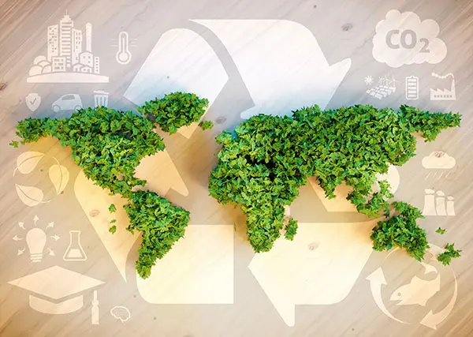

Energy Efficiency Benefits

1. Environmental Benefits
1.1 Reduced Greenhouse Gas Emissions
- Using energy more efficiently means burning fewer fossil fuels like coal, oil, and gas. This directly reduces carbon dioxide (CO₂) and other harmful emissions, which are the leading contributors to global warming and climate change.
1.2 Conservation of Natural Resources
- Energy efficiency decreases the need to extract and burn non-renewable resources, preserving them for future generations. For instance, efficient energy use can slow the depletion of oil reserves and reduce the destruction of natural habitats for mining activities.
1.3 Cleaner Air and Water
- Burning fewer fossil fuels results in fewer pollutants being released into the air and water, improving overall environmental quality and protecting ecosystems.
2. Economic Benefits
2.1 Lower Energy Costs
- Households and businesses benefit from reduced energy bills. For instance, replacing old HVAC systems with energy-efficient ones can save hundreds of dollars annually.
2.2 Increased Energy Security
- Countries that consume less energy rely less on imported fuels. This strengthens national energy independence, making economies less vulnerable to global fuel price fluctuations and supply chain disruptions.
2.3 Economic Growth and Job Creation
- Investments in energy-efficient technologies and infrastructure create new industries and employment opportunities. Jobs are generated in areas like manufacturing, construction (e.g., retrofitting buildings), and renewable energy sectors.
2.4 Enhanced Equipment Lifespan
- Efficient energy use reduces wear and tear on systems like power grids and machinery, cutting maintenance and replacement costs in the long run.
3. Social Benefits
3.1 Improved Public Health
- Lower energy consumption reduces pollution, which is linked to respiratory and cardiovascular illnesses. Cleaner air improves overall health, especially in urban areas with high populations.
3.2 Greater Comfort and Convenience
- Energy-efficient homes and workplaces often feature better temperature control, lighting, and air quality, creating a more pleasant living and working environment.
3.3 Affordable Energy for All
- By lowering energy bills, energy efficiency makes utilities more accessible, especially for low-income families. This helps reduce energy poverty, allowing more people to allocate resources to other essential needs.
3.4 Education and Awareness
- Energy efficiency initiatives often lead to increased awareness about sustainable practices. Communities become more mindful of their energy use, fostering a culture of conservation.
4. Long-Term Benefits
4.1 Mitigating Climate Change
- By reducing energy waste, we slow the pace of climate change and its effects, such as rising sea levels, severe weather events, and loss of biodiversity.
4.2 Supporting Sustainable Development
- Energy efficiency aligns with global sustainable development goals (SDGs), ensuring economic growth without compromising environmental or social well-being.
4.3 Building Resilience
- Efficient energy systems are less prone to outages and disruptions. For instance, smart grids designed for efficient energy use are better equipped to handle peak demand periods.
4.4 Extending Resource Availability
- With less energy wasted, existing reserves of non-renewable resources can last longer, providing more time to transition to renewable energy sources.